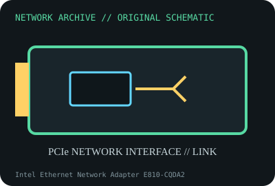

[ MODEL-SPECIFIC NETWORK HARDWARE ]
Intel Ethernet Network Adapter E810-CQDA2
Dual-port QSFP28 E810 server adapter supporting up to 100GbE. Confirm exact product label and revision before applying specifications.

IDENTIFICATION: Confirm manufacturer PID, hardware revision, device ID or module suffix. Nominal standards/link rates are not measurements of payload performance.
Exact specifications and compatibility
| Dedicated subcategory | 10 Gigabit and server adapters |
|---|---|
| Exact product/model | Intel Ethernet Network Adapter E810-CQDA2 |
| Bus, ports and physical interface | PCIe 4.0 x16; two QSFP28 cages; media can include supported optics, DAC/AOC and breakout assemblies. |
| PHY, radio or protocol | Intel E810-C controller; Ethernet mode/data rate per port depends on media, NVM and supported lane breakout. |
| Nominal rate (not measured) | Up to 100Gb/s nominal per port (200Gb/s summed), subject to PCIe/host and link mode; not measured throughput. |
| Measured throughput | No measured benchmark is claimed for a physical specimen. A valid result must record host/peer, link partner, media/cable, driver/firmware, traffic pattern, test tool and duration. |
| Drivers, OS and firmware | Linux ice driver and Intel/OEM Windows Server packages; NVM, DDP package and firmware must match exact board. RDMA requires supported stack/configuration. |
| Compatibility | PCIe 4.0 x16 host, airflow, qualified QSFP28 media and correct switch mode. Confirm switch breakout/port lane support. |
| Variant warning | E810-CQDA2 is dual QSFP28 high-rate adapter; not E810-XXVDA2 SFP28. OEM/subsystem and NVM versions affect options and support. |
Model and revision notes
E810-CQDA2 is dual QSFP28 high-rate adapter; not E810-XXVDA2 SFP28. OEM/subsystem and NVM versions affect options and support.
Linux ice driver and Intel/OEM Windows Server packages; NVM, DDP package and firmware must match exact board. RDMA requires supported stack/configuration.
PCIe 4.0 x16 host, airflow, qualified QSFP28 media and correct switch mode. Confirm switch breakout/port lane support.
Archival, ESD and preservation notes
Log board P/N, NVM/DDP, PSID, PCIe negotiated width, both port MACs and optics. Cap QSFP cages, observe laser safety, store ESD-safe.
Document source URL, access date, document revision and specimen label/condition. Preserve without credentials or private configuration.
Primary manufacturer and standards sources
- Intel E810-CQDA2 product specificationsPrimary manufacturer or standards documentation; verify exact SKU and host revision.
- Intel E810 driver and NVM downloadsPrimary manufacturer or standards documentation; verify exact SKU and host revision.
- IEEE 802.3 Ethernet standardsPrimary manufacturer or standards documentation; verify exact SKU and host revision.
Manufacturer statements cover the named part or its documented product family; the exact labeled revision and vendor compatibility list take precedence.